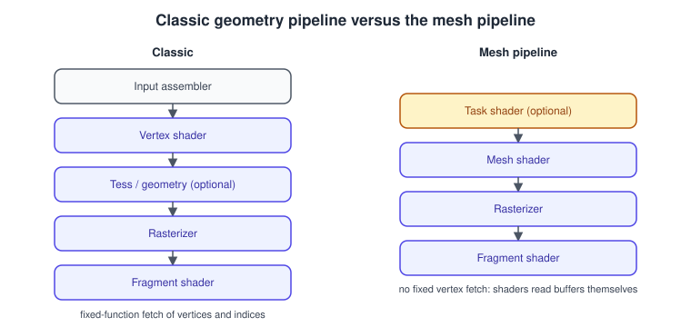
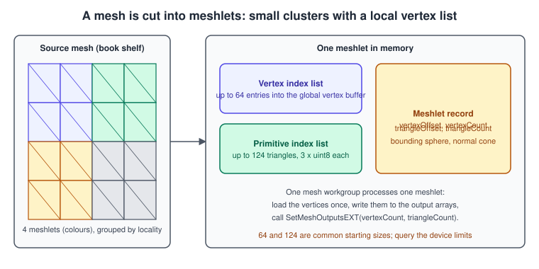
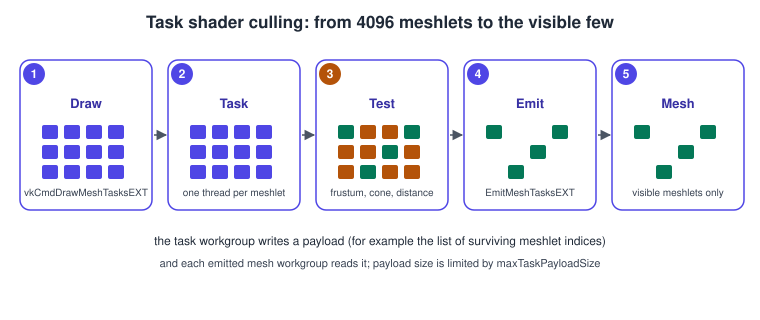

Mesh and Task Shaders
|
This content was generated with the assistance of AI and should be verified against the official documentation before being relied on in production. |
Mesh shading replaces the front half of the classic graphics pipeline. Instead of fetching vertices with fixed-function hardware and running a vertex shader per vertex, you launch workgroups, as in compute, and each workgroup writes a small batch of vertices and triangles that goes straight to the rasterizer. An optional task shader runs before it and decides how many mesh workgroups to launch, which makes per-cluster culling and level-of-detail selection natural. The model is built for geometry that is split into small clusters called meshlets and for GPU-driven scenes with millions of triangles.
The facts were checked in November 2026. The page documents VK_EXT_mesh_shader, the cross-vendor extension, with Vulkan 1.4 headers 1.4.3xx and LunarG SDK 1.4.363.0.
Mesh shaders are not part of core Vulkan 1.3 or 1.4: they are a device extension that must be queried and enabled, and they are available on recent GPUs of the major desktop
vendors, not on every phone. Treat them as an optional, faster path next to a classic vertex-shader path, as the running example does. An older vendor extension from NVIDIA, VK_NV_mesh_shader,
has a similar idea but a different API; this page uses only the EXT one.
This is the optional mesh-shader step of the Vulkan Bookshelf running example (C++20, Vulkan-Hpp RAII, VMA, Slang with GLSL as an alternative): the shelf is drawn from meshlets, with a task shader that skips the ones outside the camera frustum. It builds on Compute Shaders and Subgroups (workgroups, shared memory and barriers are identical) and on Graphics Pipeline Overview. The concepts of the stages are in The Rendering Pipeline; the classic stages that mesh shaders replace are in Tessellation and Geometry Shaders.
The two pipelines

| Aspect | Classic | Mesh |
|---|---|---|
Input |
Fixed-function vertex fetch from vertex and index buffers ( |
None. The mesh shader reads whatever it needs from storage buffers, uniform buffers or images with ordinary descriptors. |
Granularity |
One invocation per vertex, a fixed primitive topology and a fixed vertex count per draw. |
One workgroup per meshlet. The workgroup chooses at run time how many vertices and primitives it produces. |
Culling |
Fixed-function clipping and culling after the vertex shader, or CPU/compute passes before the draw. |
A task shader can discard whole meshlets, a mesh shader can mark single primitives culled, in shader code. |
Amplification |
Tessellation and geometry shaders, with poor performance on many GPUs. |
The task shader launches a variable number of mesh workgroups. |
Pipeline state |
Vertex input state, input assembly state and tessellation state. |
None of these. A mesh pipeline has no vertex input and no input assembly state. |
Mesh and classic pipelines can be mixed in one frame; the rasterizer, fragment shader, depth and blending state are the same.
Feature support and limits
Enable the features through VkPhysicalDeviceMeshShaderFeaturesEXT (query it with vkGetPhysicalDeviceFeatures2, then include it in the pNext chain of VkDeviceCreateInfo) and the extension name VK_EXT_mesh_shader:
| Feature | Meaning |
|---|---|
|
Mesh shaders can be used. |
|
Task shaders can be used (a mesh shader alone is allowed). |
|
Mesh pipelines can be used with multiview rendering. |
|
A mesh shader can write the per-primitive shading rate. |
|
Pipeline statistics and primitives-generated queries work with mesh pipelines. |
The limits live in VkPhysicalDeviceMeshShaderPropertiesEXT. The values are device specific; the page of the reference lists each one, the important ones are:
| Limit | Meaning |
|---|---|
|
Largest numbers of vertices and primitives one mesh workgroup may output. They also bound the |
|
Invocations in a mesh workgroup, in total and per axis. |
|
The same for the task shader. |
|
Largest group counts of a draw, per axis and in total. |
|
Bytes of task payload ( |
|
Bytes and components of mesh output variables. |
|
Workgroup shared memory. |
|
Combined limits of payload with output or shared memory. |
|
Invocations per workgroup that perform best, a multiple of a supported subgroup size. |
|
Whether output writes are fastest when the array index equals |
|
Whether compacting after custom culling is faster than culling primitives with |
Choose the meshlet size from these: a common starting point is up to 64 vertices and 124 triangles per meshlet (the sizes suggested by the meshoptimizer library), and
a mesh workgroup of 32 or 64 invocations, adjusted to maxPreferredMeshWorkGroupInvocations and the output limits.
Meshlets

A meshlet is a small cluster of triangles with a local list of the vertices it uses. It is built offline (or at load time) from an ordinary indexed mesh:
-
A vertex index list maps meshlet-local vertex numbers (0 to 63) to indices in the global vertex buffer.
-
A primitive list stores each triangle as three small indices into the local list (one byte each).
-
A meshlet record holds the offsets and counts, and usually a bounding sphere and a normal cone for culling.
Good meshlets share many vertices (so each vertex is shaded once per meshlet) and are spatially compact (so culling by bounds works). The meshoptimizer library produces them with meshopt_buildMeshlets
and bounds with meshopt_computeMeshletBounds. A short build step looks like this (see the library documentation for the exact signatures):
#include <meshoptimizer.h>
#include <vector>
struct MeshletData {
std::vector<meshopt_Meshlet> meshlets;
std::vector<unsigned int> vertices; // meshlet-local to global vertex index
std::vector<unsigned char> triangles; // three bytes per triangle
};
MeshletData buildMeshlets(const std::vector<unsigned int>& indices,
const std::vector<float>& positions /* xyz, tightly packed */) {
constexpr size_t maxVertices = 64, maxTriangles = 124;
constexpr float coneWeight = 0.0f;
size_t bound = meshopt_buildMeshletsBound(indices.size(), maxVertices, maxTriangles);
MeshletData out;
out.meshlets.resize(bound);
out.vertices.resize(bound * maxVertices);
out.triangles.resize(bound * maxTriangles * 3);
size_t count = meshopt_buildMeshlets(out.meshlets.data(), out.vertices.data(), out.triangles.data(),
indices.data(), indices.size(),
positions.data(), positions.size() / 3, sizeof(float) * 3,
maxVertices, maxTriangles, coneWeight);
out.meshlets.resize(count);
return out;
}Source: meshoptimizer repository
The upload of the three arrays to storage buffers is the same staging copy as for any buffer, see Memory, Heaps, Types and VMA and Buffers, Images and Views. The shader reads the buffers by descriptor (or by buffer device address, see Bindless Descriptor Indexing, Buffer Addresses and Heaps).
The mesh shader
A mesh shader is a compute-like shader with a fixed output declaration. Its execution model in SPIR-V is MeshEXT; the GLSL extension is GL_EXT_mesh_shader.
Declaring the outputs
#version 460
#extension GL_EXT_mesh_shader : require
layout(local_size_x = 64) in; // workgroup size
layout(triangles, max_vertices = 64, max_primitives = 124) out; // output topology and maximum counts-
The topology is
points,linesortriangles. -
max_verticesandmax_primitivesmust not exceedmaxMeshOutputVerticesandmaxMeshOutputPrimitives, and the total output size must fitmaxMeshOutputMemorySize. -
The shader writes
gl_MeshVerticesEXT[i].gl_Position(andgl_PointSize, clip and cull distances) for vertices, andgl_PrimitiveTriangleIndicesEXT[i](auvec3) for triangles;gl_PrimitivePointIndicesEXTandgl_PrimitiveLineIndicesEXTserve the other topologies. -
Per-vertex user outputs are declared as
layout(location = 0) out vec3 vColor[];and per-primitive ones with theperprimitiveEXTqualifier. Built-in per-primitive outputs live ingl_MeshPrimitivesEXT[i](gl_PrimitiveID,gl_Layer,gl_ViewportIndex,gl_CullPrimitiveEXT,gl_PrimitiveShadingRateEXT).
Setting the output size
The shader must call SetMeshOutputsEXT(vertexCount, primitiveCount) exactly once, in uniform control flow, before writing any output. Counts of zero emit nothing. The counts may be smaller than the maximum, so a meshlet
with 30 vertices uses 30. Writes outside the declared counts are undefined.
A complete mesh shader
The Bookshelf shelf drawn from meshlets. Vertices are stored in a storage buffer as vec4 position plus vec4 normal and uv, to avoid vec3 padding questions.
#version 460
#extension GL_EXT_mesh_shader : require
layout(local_size_x = 64) in;
layout(triangles, max_vertices = 64, max_primitives = 124) out;
struct Meshlet {
uint vertexOffset;
uint triangleOffset;
uint vertexCount;
uint triangleCount;
};
layout(std430, set = 0, binding = 0) readonly buffer Meshlets { Meshlet meshlets[]; };
layout(std430, set = 0, binding = 1) readonly buffer MeshletVerts { uint meshletVertices[]; };
layout(std430, set = 0, binding = 2) readonly buffer MeshletTris { uint meshletTriangles[]; }; // 4 packed bytes per uint
layout(std430, set = 0, binding = 3) readonly buffer Vertices { vec4 vertexData[]; }; // pos.xyz, 1.0 ; then normal.xyz, uv packed in the next entry
layout(push_constant) uniform Push { mat4 viewProj; } pc;
layout(location = 0) out vec3 vNormal[];
taskPayloadSharedEXT struct { uint meshletIds[32]; } payload; // written by the task shader (see below)
uint readTriByte(uint byteIndex) {
return (meshletTriangles[byteIndex >> 2u] >> ((byteIndex & 3u) * 8u)) & 0xFFu;
}
void main() {
uint meshletIndex = payload.meshletIds[gl_WorkGroupID.x];
Meshlet m = meshlets[meshletIndex];
SetMeshOutputsEXT(m.vertexCount, m.triangleCount);
for (uint v = gl_LocalInvocationIndex; v < m.vertexCount; v += 64u) {
uint globalIndex = meshletVertices[m.vertexOffset + v];
vec4 pos = vertexData[globalIndex * 2u];
vec4 normal = vertexData[globalIndex * 2u + 1u];
gl_MeshVerticesEXT[v].gl_Position = pc.viewProj * vec4(pos.xyz, 1.0);
vNormal[v] = normal.xyz;
}
for (uint t = gl_LocalInvocationIndex; t < m.triangleCount; t += 64u) {
uint b = m.triangleOffset + t * 3u;
gl_PrimitiveTriangleIndicesEXT[t] = uvec3(readTriByte(b), readTriByte(b + 1u), readTriByte(b + 2u));
}
}Notes on the shader:
-
The loops stride by the workgroup size, so one meshlet works for any workgroup size that divides the work correctly.
-
Output indices must be below the vertex count passed to
SetMeshOutputsEXT. -
The fragment shader is an ordinary one that reads
vNormal(the same interface rules apply, with locations matching). -
Without a task shader
gl_WorkGroupID.xis the meshlet index directly and there is no payload.
The task shader

A task shader (execution model TaskEXT) runs before the mesh stage. It has a compute-like workgroup, can use shared memory, barriers and subgroup operations, and ends by calling
EmitMeshTasksEXT(x, y, z), which launches that many mesh workgroups. It communicates with them through the task payload, a variable declared with taskPayloadSharedEXT that all invocations of the task workgroup
share and that every launched mesh workgroup can read. Rules:
-
EmitMeshTasksEXTmust be called exactly once, in uniform control flow, and it ends the task invocation. -
The payload size is limited by
maxTaskPayloadSize(and the combined limits above). The task workgroup writes it before the emit; it is copied to the mesh workgroups. -
A mesh workgroup launched by a task shader gets
gl_WorkGroupIDrelative to the emitted grid, so the payload is how it learns which meshlet to process. -
A pipeline with a mesh shader but no task shader is allowed (the draw count is then the mesh workgroup count).
A frustum-culling task shader
#version 460
#extension GL_EXT_mesh_shader : require
#extension GL_KHR_shader_subgroup_ballot : require
layout(local_size_x = 32) in;
struct MeshletBounds { vec4 sphere; }; // xyz centre in model space, w radius
layout(std430, set = 0, binding = 4) readonly buffer Bounds { MeshletBounds bounds[]; };
layout(push_constant) uniform Push {
mat4 viewProj;
vec4 frustumPlanes[6]; // world space, normalised, pointing inwards
uint meshletCount;
} pc;
taskPayloadSharedEXT struct { uint meshletIds[32]; } payload;
bool sphereVisible(vec4 s) {
for (int i = 0; i < 6; ++i) {
if (dot(pc.frustumPlanes[i].xyz, s.xyz) + pc.frustumPlanes[i].w < -s.w) return false;
}
return true;
}
void main() {
uint meshlet = gl_GlobalInvocationID.x;
bool visible = meshlet < pc.meshletCount && sphereVisible(bounds[meshlet].sphere);
uvec4 ballot = subgroupBallot(visible);
uint slot = subgroupBallotExclusiveBitCount(ballot); // my place among the visible lanes
if (visible) {
payload.meshletIds[slot] = meshlet;
}
uint count = subgroupBallotBitCount(ballot);
EmitMeshTasksEXT(count, 1, 1); // launch only the visible meshlets
}Source: Vulkan Guide: Subgroups
This version assumes the task workgroup equals one subgroup (32 lanes), which is why it needs the ballot extension and writes a payload of 32 entries; on a device with a different subgroup size you would read the size and set the workgroup size with a specialization constant (see Compute Shaders and Subgroups). Larger task workgroups use shared memory and an atomic counter instead of a ballot. A task workgroup of 32 invocations covers 32 meshlets, so a mesh with 4096 meshlets needs 128 task workgroups, which the draw call launches.
Task shaders are also the place for level-of-detail selection (choose a coarser meshlet set by distance), back-face culling with the normal cone, and occlusion tests against a depth pyramid.
Mesh shaders in Slang and HLSL
Slang and HLSL express the same stages with attributes. The same shader in Slang:
struct VertexOut { float4 position : SV_Position; float3 normal : NORMAL; };
[shader("mesh")]
[numthreads(64, 1, 1)]
[outputtopology("triangle")]
void meshMain(
uint gtid : SV_GroupThreadID,
uint gid : SV_GroupID,
in payload MeshPayload payload,
OutputVertices<VertexOut, 64> verts,
OutputIndices<uint3, 124> tris)
{
Meshlet m = meshlets[payload.meshletIds[gid]];
SetMeshOutputCounts(m.vertexCount, m.triangleCount);
for (uint v = gtid; v < m.vertexCount; v += 64) {
// read the vertex as in the GLSL version
verts[v] = shadeVertex(meshletVertices[m.vertexOffset + v]);
}
for (uint t = gtid; t < m.triangleCount; t += 64) {
tris[t] = readTriangle(m, t);
}
}Source: Slang user guide
The helper functions and the MeshPayload struct are application code. Task shaders use [shader("amplification")] with DispatchMesh(x, y, z, payload) instead of EmitMeshTasksEXT. Compile with slangc -target spirv; with HLSL use DXC (-spirv, target profiles ms_6_5 and as_6_5)
and see Shaders, SPIR-V and Shading Languages.
Pipeline creation and drawing
A mesh pipeline is an ordinary VkGraphicsPipeline, but its shader stages are VK_SHADER_STAGE_TASK_BIT_EXT (optional), VK_SHADER_STAGE_MESH_BIT_EXT and VK_SHADER_STAGE_FRAGMENT_BIT, and it omits the vertex-input and input-assembly state.
Everything else (viewport, rasterization, depth-stencil, color blend, dynamic rendering formats) is as in Graphics Pipeline Overview and Dynamic Rendering.
std::array stages{
vk::PipelineShaderStageCreateInfo{{}, vk::ShaderStageFlagBits::eTaskEXT, *taskModule, "main"},
vk::PipelineShaderStageCreateInfo{{}, vk::ShaderStageFlagBits::eMeshEXT, *meshModule, "main"},
vk::PipelineShaderStageCreateInfo{{}, vk::ShaderStageFlagBits::eFragment, *fragModule, "main"},
};
vk::PipelineRenderingCreateInfo rendering{};
rendering.colorAttachmentCount = 1;
rendering.pColorAttachmentFormats = &colorFormat;
rendering.depthAttachmentFormat = depthFormat;
vk::GraphicsPipelineCreateInfo info{};
info.pNext = &rendering;
info.stageCount = static_cast<uint32_t>(stages.size());
info.pStages = stages.data();
info.pVertexInputState = nullptr; // not used with a mesh shader
info.pInputAssemblyState = nullptr; // not used with a mesh shader
info.pViewportState = &viewportState;
info.pRasterizationState = &rasterState;
info.pMultisampleState = &msaaState;
info.pDepthStencilState = &depthState;
info.pColorBlendState = &blendState;
info.pDynamicState = &dynamicState; // viewport and scissor
info.layout = *pipelineLayout;
vk::raii::Pipeline meshPipeline{device, nullptr, info};
// Recording: one task workgroup per 32 meshlets
cmd.bindPipeline(vk::PipelineBindPoint::eGraphics, *meshPipeline);
cmd.bindDescriptorSets(vk::PipelineBindPoint::eGraphics, *pipelineLayout, 0, {*descriptorSet}, {});
cmd.pushConstants<ShelfPush>(*pipelineLayout, vk::ShaderStageFlagBits::eTaskEXT | vk::ShaderStageFlagBits::eMeshEXT, 0, push);
cmd.drawMeshTasksEXT((meshletCount + 31) / 32, 1, 1);The draw commands:
| Command | Meaning |
|---|---|
|
Launches |
|
Reads |
|
Like the indirect command but the draw count is read from a second buffer, with a maximum. A compute pass can generate both, which is the basis of fully GPU-driven drawing. |
Pitfalls: the group counts are limited by maxTaskWorkGroupCount or maxMeshWorkGroupCount and their totals; the shader stages in the push constant range must name the task and mesh stages; and
the vertex-pipeline-only features (vertex buffers, gl_VertexIndex, gl_InstanceIndex) are gone, so instancing is done by launching more workgroups and indexing an instance buffer in the shader.
Barriers that make data visible to these stages use VK_PIPELINE_STAGE_2_TASK_SHADER_BIT_EXT and VK_PIPELINE_STAGE_2_MESH_SHADER_BIT_EXT, see
Synchronization and Sync2.
Enabling the extension
vk::PhysicalDeviceMeshShaderFeaturesEXT meshFeatures{};
meshFeatures.meshShader = VK_TRUE;
meshFeatures.taskShader = VK_TRUE;
vk::PhysicalDeviceVulkan13Features v13{};
v13.dynamicRendering = VK_TRUE;
v13.synchronization2 = VK_TRUE;
v13.pNext = &meshFeatures;
const char* extensions[] = {VK_KHR_SWAPCHAIN_EXTENSION_NAME, VK_EXT_MESH_SHADER_EXTENSION_NAME};
vk::DeviceCreateInfo deviceInfo{};
deviceInfo.pNext = &v13;
deviceInfo.enabledExtensionCount = 2;
deviceInfo.ppEnabledExtensionNames = extensions;
// queue create infos as in "Physical and Logical Devices"Check that the device exposes the extension and that the feature structure reports meshShader before choosing the mesh path; otherwise fall back to the classic pipeline. The device creation chain is
explained in Physical and Logical Devices, and extension selection in Versions, Profiles and Extensions.
Common mistakes
-
Calling
SetMeshOutputsEXTtwice, in divergent control flow, or after writing outputs. -
Writing outputs at an index beyond the declared counts, or declaring
max_vertices/max_primitiveslarger than the device limits. -
Calling
EmitMeshTasksEXTfrom non-uniform control flow, or forgetting it (the workgroup then emits nothing or is invalid). -
Exceeding
maxTaskPayloadSizewith a payload that grows with the workgroup size. -
Choosing meshlets that are too small (wasted lanes) or whose size does not suit the hardware preference values.
-
Binding vertex or index buffers and expecting them to be used.
-
Using mesh shaders on hardware that does not expose them without a fallback path.
Performance notes
-
Meshlet quality matters most: high vertex reuse and tight bounds. Re-build with different limits and measure.
-
Prefer writing output arrays at
gl_LocalInvocationIndexwhenprefersLocalInvocationVertexOutputis set. -
Cull in the task shader at the cluster level and in the mesh shader at the primitive level only if compaction is not preferred (
prefersCompactPrimitiveOutput). -
Mesh shaders pay off for dense geometry and GPU-driven scenes; for a handful of simple draws the classic pipeline is as fast and simpler.
-
On tile-based mobile GPUs the extension is mostly absent; see Multithreading and Performance.
-
Debug meshlet output with a capture tool, see Debugging and Capture Tools.
Where the older books are outdated
| Topic | Older books | Today |
|---|---|---|
Geometry amplification and billboards |
The Vulkan Programming Guide (chapter 9) and the Vulkan Cookbook (chapters 7 and 12) use geometry and tessellation shaders. |
Mesh shaders or compute replace the geometry stage; geometry shaders are slow on tile-based GPUs, and tessellation can be replaced by task and mesh shaders. |
Mesh shaders |
Not covered; both books target Vulkan 1.0 (2016 and 2017). |
|
Culling |
Done on the CPU or by fixed-function clipping. |
Task shaders and indirect-count draws allow fully GPU-driven culling. |
Vertex input |
Always vertex buffers and an input assembly state. |
Optional; mesh pipelines have no vertex input and read storage buffers or buffer device addresses. |
See it in
The concept is explained in The Rendering Pipeline. Metal’s equivalent are object and mesh shaders, see Metal. The following Vulkan pages use the result: Bookshelf 02: Scene and Game and Ray Tracing.